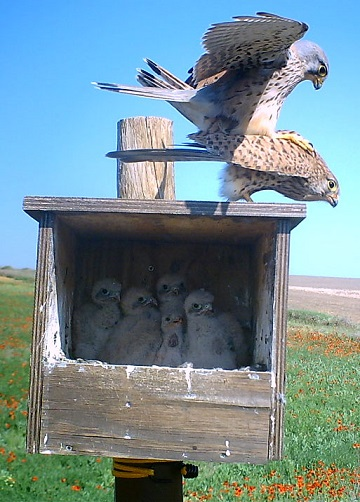
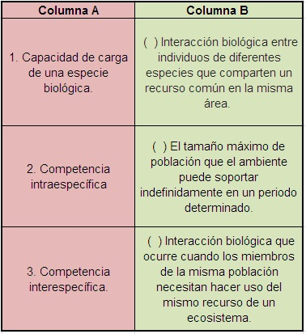
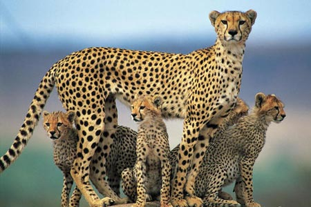
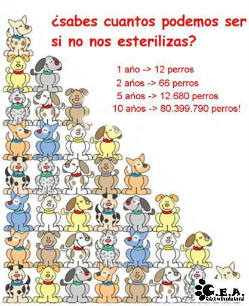

La asombrosa selección natural - Evaluación Unidad 2
Con base en la unidad 2: “¿Por qué no estamos inundados de mantis?” responde.
-
En España se llevó a cabo un programa de reinserción de lechuzas y cernícalos en campos de cereales y se observaron los siguientes datos de ocupación en el lapso de tres años.

La gráfica nos muestra que en un momento inicial el tipo de crecimiento…
Aumenta de forma constante (exponencial).
Se ve impedido por la falta de recursos.
Es por encima al crecimiento de los roedores de los que se alimenta.
-
Es de esperarse que el número de parejas se estabilice debido a:
El crecimiento ilimitado de las presas.
La competencia con las lechuzas.
El número limitado de roedores.
Enfermedades que afecten a los cernícalos.
Son correctas:
1, 3 y 4.
1, 2 y 3
2, 3 y 4
1, 2 y 4
-
La siguiente imagen muestra una pareja de cernícalos comunes (Falco tinnunculus) copulando sobre una caja-nido. Dentro de la caja se puede observar cinco polluelos de esta pareja.
De los polluelos de esta pareja de cernícalos puede decirse que:
Son genéticamente iguales ya que viene de los mismos padres.
Son fenotípicamente diferentes porque tienen los mismos genotipos.
Son genéticamente diferentes entre ellos.
Son fenotípicamente iguales por la reproducción asexual.
-
El hongo Aspergillus fumigatus afecta a muchas aves rapaces produciendo micosis que afectan las vías respiratorias bajas (pulmón y sacos aéreos). La relación ecológica entre los hongos Aspergillus y las rapaces es un ejemplo de:
Parasitismo.
Competencia intraespecífica.
Competencia interespecífica.
Depredación.
-
La siguiente imagen muestra una interacción ecológica entre dos especies del tipo:

Depredación.
Competencia interespecífica.
Parasitismo.
Competencia intraespecífica.
-
A continuación se presentan tres conceptos claves. Las definiciones y los conceptos se encuentran en columnas separadas.
Los números de la columna B en su orden son:
1 - 2 - 3
3 - 2 - 1
2 - 1 - 3
2 - 3 - 1
Responde las preguntas 7 y 8 con base en la siguiente lectura:
En el año de 1986 el biólogo O’Brien estudió la variabilidad genética del guepardo. Para ello analizó 40 muestras de semen y sangre de 18 machos. Asombrosamente encontraron diferencia alguna en los 52 genes que observamos. Con frecuencia esta pérdida de diversidad genética se da por cruza entre parientes cercanos (endogamia). Para determinar si había una pérdida de diversidad genética los investigadores tomaron muestras de piel de ocho guepardos del parque animal Wildlife Safari de Oregón y las injertaron en otros ejemplares. Lo usual es que el receptor de un implante tiende a rechazarlo, a menos que sea muy parecido inmunológicamente al del donante. Pero los guepardos no rechazaron el injerto de piel. Esto significaba que sus sistemas inmunes eran tan idénticos que los animales estaban expuestos a las mismas enfermedades.
Dos años después del experimento con los injertos de piel, una epidemia de peritonitis viral acabó con el 60% de los guepardos de Wildlife Safari. Curiosamente ninguno de los leones del mismo llegaron siguiera a presentar los síntomas de la enfermedad.
-
De la anterior lectura se puede concluir que:
La uniformidad genética reduce la habilidad de una especie para adaptarse a los cambios de su ambiente.
La endogamia es postiva para las poblaciones porque les permite recibir transplantes.
Las enfermedades virales se dan sólo entre poblaciones genéticamente poco diversas.
Las perturbaciones ecológicas, como cambios de temperatura, sequías, glaciaciones y la aparición de nuevos virus o bacterias son más fáciles de superar cuando hay alta endogamia.
-
La recombinación de genes durante la meiosis y la unión aleatoria tras la fertilización habitualmente lleva a la producción de…
cigotos con los mismos genes que sus padres.
gametos con muchas copias del mismo cromosoma.
cigotos con fenotipos similares.
descendencia con ciertos rasgos que no aparecieron en los padres.
-
Completa la siguiente frase:
“La variedad genética es la materia prima de ________”
El entrecruzamiento.
la evolución.
la endogamia
la reproducción sexual.
-
El economista Malthus escribió el libro “Ensayo sobre el principio de la población” en el que se exponía que “Cuando no lo impide ningún obstáculo, la población va doblando cada 25 años, creciendo de período de período, en una progresión geométrica. Los medios de subsistencia, en las circunstancias más favorables, no se aumentan sino en una progresión aritmética.”
Darwin y Wallace leyeron de manera independiente esta obra y notaron que lo que Malthus decía para las poblaciones humanas…
no se podía aplicar a las poblaciones de animales.
se podría aplicar a las poblaciones animales pero no a las vegetales.
se aplica perfectamente a todas las poblaciones de seres vivos.
era mentira porque la Tierra fue creada para los seres humanos.
Componente axiológico:
Debido a que las poblaciones biológicas tienen el potencial de crecer de manera exponencial se ha creado un problema con muchas mascotas, como perros y gatos que son abandonados y generan unas poblaciones de animales sin cuidados habitando las calles o los campos.
¿Qué responsabilidades deben tener las personas con sus mascotas para evitar la sobrepoblación de mascotas en las calles? Elabora una cartelera en la que lo puedas explicar al curso.
Créditos de las imágenes:
Imagen 1 y 2: http://grefa.org/alfonsopaz/?p=367
Imagen 3: http://geodinamics.blogspot.com/2013/01/indultos-entre-hienas-la-justicia-del.html
Imagen 5: http://www.taringa.net/posts/ecologia/15039968/El-guepardo-hermoso-animal.html
Imagen 6: http://www.adopta.mx/2010/05/faq-preguntas-frecuentes/
Comentarios
Comments powered by Disqus